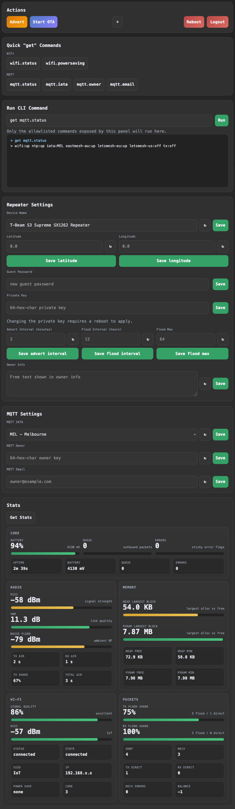

Repeater Web Panel
This page is for end users running an EastMesh *_repeater_mqtt build with the local web panel enabled.
It covers how to reach the panel, what each section does, and what to expect when using it on desktop or mobile.
What It Is
The repeater web panel is a local HTTPS configuration page served directly by the repeater over WiFi.
It gives you:
- a password-gated local admin page
- quick
getcommands for common repeater and MQTT checks - a terminal-style CLI panel for allowlisted commands
- editable repeater settings
- editable MQTT settings
- a stats dashboard with Wi-Fi, core, radio, memory, and packet views
Screenshot Overview
The layout below reflects the current panel structure for the repeater web UI.

Requirements
You need:
- a supported
*_repeater_mqttfirmware build - WiFi configured on the repeater
- the repeater connected to your local network
- the repeater admin password
Some constrained targets disable the web panel to stay within flash limits. If your board does not support it, get web.status will not show it as available.
How To Open It
- Connect the repeater to WiFi.
- Find its IP address.
- Open
https://<repeater-ip>/in a browser. - Accept the browser warning for the self-signed certificate.
- Enter the repeater admin password.
Useful CLI commands:
get wifi.status- shows WiFi state and IP address when connected
get web.status- shows whether the web panel is up and which URL to use
Example:
https://10.33.135.208/
Login And Security
- the panel uses the same admin password as the repeater CLI
- the connection is HTTPS, but the certificate is self-signed
- browsers will warn the first time you connect
- the panel only exposes an allowlisted subset of CLI commands
This is intended for local admin use on a trusted network, not for open internet exposure.
Actions
The Actions panel gives you the most common operational controls:
AdvertStart OTARebootLogout- theme toggle
Use Start OTA only when you intend to update firmware.
Quick "get" Commands
This section runs common read-only commands for:
- Wi-Fi
- MQTT
These are useful for quick checks without typing into the CLI field.
Run CLI Command
This is a small terminal for allowlisted commands.
- press
Enterto run the command - command history is shown in the terminal box below
- save buttons elsewhere in the page also show the generated command and the reply here
This makes it easy to see exactly what the panel sent to the repeater.
Repeater Settings
This section includes:
- Device Name
- Latitude
- Longitude
- Guest Password
- Private Key
- Advert Interval
- Flood Interval
- Flood Max
- Owner Info
Notes:
LatitudeandLongitudedefault to0.0as placeholders- changing the private key requires a reboot to apply
- the refresh buttons load the current value from the repeater
- the save buttons send the matching CLI command immediately
MQTT Settings
This section includes:
mqtt.iata- selected from a curated east-coast/south-east list
mqtt.owner- owner public key
mqtt.email- owner contact email
MEL is used as the default dropdown option until the repeater's saved value is loaded.
Stats
Press Get Stats to load the dashboard.
The stats page currently shows:
- Core
- Radio
- Memory
- Wi-Fi
- Packets
The dashboard is designed to work well on phones as well as desktop browsers.
Mobile Use
The page is responsive and should work cleanly on a phone.
On mobile:
- quick command buttons collapse into a two-column layout
- action buttons stack more cleanly
- input rows stay usable for touch interaction
- stats cards reorganize into single-column sections where needed
Common Tasks
Check WiFi And MQTT
- Open the panel.
- Press
wifi.statusin QuickgetCommands. - Press
mqtt.statusin QuickgetCommands. - Press
Get Statsfor the dashboard view.
Change Device Name
- Edit
Device Name. - Press
Save. - Confirm the generated command and reply in the CLI terminal box.
Update MQTT Owner Or Email
- Go to
MQTT Settings. - Enter the new value.
- Press
Save. - Use the refresh button if you want to re-read the stored value from the repeater.
Start OTA
- Press
Start OTA. - Confirm the action.
- Continue with your normal OTA workflow.
Troubleshooting
The browser warns about the certificate
That is expected. The panel uses a self-signed certificate generated for local use.
I cannot reach the page
Check:
- the repeater is on WiFi
- the IP address from
get wifi.status get web.statusreports the panel as up- your board/firmware target supports the web panel
The panel opens but login fails
Use the repeater admin password, not the guest password.
A command says it is not allowlisted
The panel intentionally limits what can be run from the browser. Use the serial CLI for commands outside the web allowlist.
Stats or settings do not refresh
Try:
- refreshing the browser tab
- logging out and back in
- checking WiFi stability with
get wifi.status